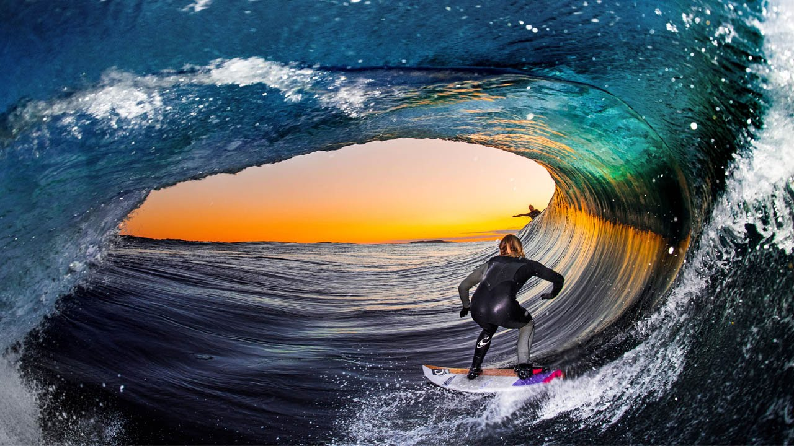
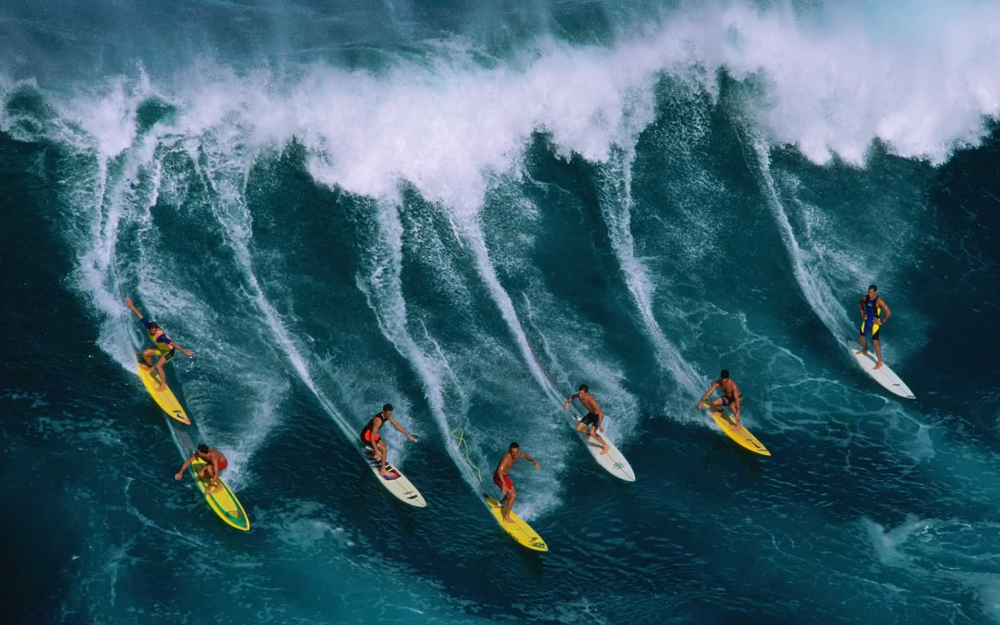

SURFING

Oahu
Oahu is the proverbial heartbeat of surfing in Hawaii. The island’s North Shore is the place to catch the perfect wave, regardless of your skill level. Before you head out, we should note that the winter waves can be massive and are best left to the professional crowd. However, the summer waves are much tamer and are ideal for the beginner and intermediate level surfers. Of course, use your judgment or hire a professional surf and adventure guide to help you get started. Puaena Point- Located next to Haleiwa Beach Park, Puaena Point is a great spot to catch your first wave or perfect your technique. It is ideal for surfers and stand up paddleboarders alike. There is also some shade to be had along the shoreline if you need a break from the rays. As an added bonus, it’s not far from Haleiwa, a great town with cool surf shops, restaurants, boutiques, and art galleries. Chun’s Reef- Also located outside of Haleiwa, Chun’s Reef (referred to as simply Chun’s by locals), has ideal conditions for learning and perfecting your technique when conditions are calm. Waves break pretty far out, so there’s smaller shore break, making for long rides. Chun’s is a hot spot for some of the surf schools. Laniakea Beach (aka Turtle Beach)- Named after the sea turtles that come to shore here, Turtle Beach can be a bit crowded, as people come to view these beautiful creatures lounging on the sand. A long right side break is great in small to medium waves. Plus, this spot is located right across from the fabulous Turtle Bay Resort. Canoes- If you'll be headed to the South Shore, check out Waikiki’s Canoes surf spot. The waves here tend to be easy and on the slow side, perfect for beginners or those surfers who have gotten ‘rusty’. After a long day of surfing, rest up at the
Maui
Maui’s waters are crystal clear, offering surfers and paddleboarders amazing views of the reefs, tropical fish, and sea turtles below. It’s also a great spot in that you can reach any shore in less than three hours. Keep in mind, though, that it has a well-earned reputation as a windy island, with winds kicking up by 9 am or earlier. Therefore, it’s recommended you grab your board of choice early in the morning. Launiupoko State Wayside Park- Located just south of Lahaina, Launiupoko has long, easy reef waves that are ideal for newbies. The vibe here is super-welcoming and you’ll find a wide range of folks from every walk of surfing life here. Kihei Cove- A top-pick for the beginner to intermediate crowd for its fun sloping waves. The swell here can roll in over 100 yards and is fun for surfers and stand up paddleboarders alike. It’s also a great place to just hang out and relax if you want to wait for your surfing friends! Launiupoko State Wayside Park- Located just south of Lahaina, Launiupoko has long, easy reef waves that are ideal for newbies. The vibe here is super-welcoming and you’ll find a wide range of folks from every walk of surfing life here. Kihei Cove- A top-pick for the beginner to intermediate crowd for its fun sloping waves. The swell here can roll in over 100 yards and is fun for surfers and stand up paddleboarders alike. It’s also a great place to just hang out and relax if you want to wait for your surfing friends!
Kauai
Kiahuna Beach- Located on Kauai’s southeast corner, this spot is actually a section of the popular Poipu Beach and boasts perfect waves for the more novice surfers, and those who need to boost their confidence. Beginners should stay close to shore; the more experienced crowd can ride the waves out past the reef. Boogie boarding, swimming, and snorkeling are also popular here.
